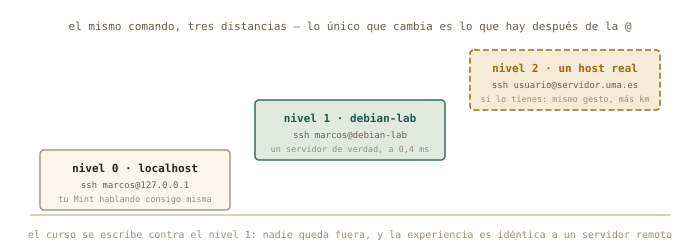
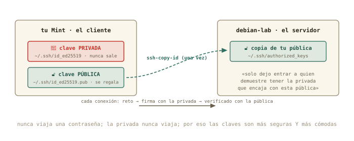

12 SSH: entrar en otra máquina
Bloque E: trabajar en remoto. Todo lo anterior conducía aquí — un servidor instalado por ti, con nombre, con una puerta abierta, y el mapa de cómo llegar. Hoy entras por esa puerta. Aprendes el comando con el que un físico computacional pasa media vida, sustituyes las contraseñas por claves — más seguras y más cómodas a la vez —, y mueves ficheros entre máquinas como si estuvieran en la misma mesa. Primero contigo mismo, luego con tu VM, y después con cualquier servidor del mundo.
Al terminar esta sesión sabrás
- Conectarte a otro ordenador con ratón, desde el gestor de archivos: SSH, Samba, FTP y NFS por el mismo diálogo.
- Qué son el cliente y el servidor SSH, y qué pasa exactamente al conectar por primera vez (la huella,
known_hosts). - Convertir tu propia máquina en servidor con
openssh-server, y entrar en ella desde ella misma. - Crear un par de claves ed25519, instalarlo en el servidor con
ssh-copy-idy no volver a teclear una contraseña. - Bautizar servidores en
~/.ssh/configpara conectar con una palabra. - Copiar ficheros entre máquinas con
scpy sincronizar carpetas conrsync. - Ejecutar un comando en otra máquina sin abrir sesión — y por qué eso cambia tu forma de trabajar.
- Qué cambia cuando el servidor es de verdad: la universidad, una nube, o tu casa desde fuera.
△ Aviso · Este capítulo tiene dos velocidades
Lo esencial — y suficiente para el proyecto final — son las dos primeras secciones: conectarte a otro ordenador con el gestor de archivos, y abrir una sesión SSH con tu contraseña. Todo lo demás — claves, agenda, rsync, comandos remotos, endurecer el servidor — es lo que usa un profesional a diario, pero es avanzado: si en algún punto te pierdes, quédate con lo esencial, sigue al capítulo 13 (que solo necesita saber entrar) y vuelve aquí cuando el resto te haga falta. Nadie aprende SSH entero en una tarde — y cuando vuelvas, hazlo con una IA al lado, como cuenta el anexo E1: lo avanzado se conoce para entender lo que la IA te proponga, no para teclearlo de memoria.
12.1 Primero con ratón: otro ordenador en tu gestor de archivos
Antes de teclear un solo comando, la versión que ya sabes usar. Tu gestor de archivos — Nemo en Mint (Caja, Nautilus o Thunar en otros escritorios) — sabe abrir carpetas que viven en otra máquina, y lo hace con un solo diálogo para todos los protocolos que te vas a encontrar. Menú Archivo → Conectar al servidor… y verás un desplegable con el tipo de conexión:
| Tipo | Qué es | Cuándo te lo encontrarás |
|---|---|---|
| SSH (SFTP) | ficheros a través de una sesión SSH cifrada | cualquier máquina Linux con SSH — tu debian-lab, el clúster |
| Windows / Samba (SMB) | el «compartir carpeta» de Windows y de los NAS | la impresora de casa, el disco de red, el PC con Windows |
| FTP | el protocolo veterano de transferir ficheros, sin cifrar | servidores públicos de datos, alojamientos web antiguos |
| WebDAV | ficheros sobre una web | nubes universitarias, Nextcloud |
NFS (escribiendo nfs://… en la barra de dirección) |
el compartir de Unix | laboratorios y clústeres (anexo B2) |
Pruébalo ahora con lo que ya tienes: tipo SSH, servidor debian-lab (el nombre que le diste en el capítulo 11), carpeta /home/marcos, usuario marcos, y tu contraseña. La casa del servidor aparece en la barra lateral como una carpeta más: arrastra un fichero, ábrelo, edítalo, bórralo — todo viaja por el servidor SSH que dejaste instalado en el capítulo 8. Eso que acaba de pasar es SSH; el resto del capítulo es el mismo mecanismo visto desde la terminal, donde además de mover ficheros podrás ejecutar cosas en la otra máquina. Si hoy no pasas de esta sección, ya sabes conectarte a otro ordenador — que era el objetivo.
12.2 Cliente y servidor
SSH (Secure Shell) es un shell — el del capítulo 1 — que corre en otra máquina, con tu teclado y tu pantalla conectados a él por la red, cifrado de punta a punta. Tiene dos mitades: el servidor (sshd, el que escucha en el puerto 22 que viste ayer) y el cliente (ssh, el comando que tecleas). Tu debian-lab lleva el servidor desde la instalación; tu Mint trae el cliente de serie. Y gracias al /etc/hosts de ayer, la máquina tiene nombre:
marcos@portatil:~$ ssh marcos@debian-lab
The authenticity of host 'debian-lab (192.168.122.15)' can't be established.
ED25519 key fingerprint is SHA256:kX9v2Lm4pQ7rT1sW8yZaBcDeFgHiJkLmNoPqRsTuVwX.
Are you sure you want to continue connecting (yes/no/[fingerprint])? yes
Warning: Permanently added 'debian-lab' (ED25519) to the list of known hosts.
marcos@debian-lab's password:
Linux debian-lab 6.12.0-amd64 #1 SMP Debian 6.12.41-1 x86_64
marcos@debian-lab:~$ hostname
debian-lab
marcos@debian-lab:~$ exit
Connection to debian-lab closed.
marcos@portatil:~$Léelo con calma, porque cada línea enseña algo. La pregunta de la huella (fingerprint) solo aparece la primera vez: SSH no conoce a esa máquina y te pide que confirmes que es quien dice ser; al decir yes, apunta su huella en ~/.ssh/known_hosts y a partir de ahí la reconoce sola. (Si algún día esa huella cambia, SSH se negará a conectar con un aviso en mayúsculas: o han reinstalado el servidor, o alguien se está haciendo pasar por él. Nunca se ignora.) Después, la contraseña de tu usuario en el servidor, y el prompt cambia: marcos@debian-lab. Tu terminal está ahora en la otra máquina — cada comando que teclees se ejecuta allí, con sus ficheros, sus permisos, su apt. exit te devuelve a casa. Ese cambio de prompt es tu brújula del bloque E: mira siempre dónde estás antes de teclear.
◷ Historia · Del teléfono al cifrado
Entrar en un ordenador lejano es más viejo que internet: en los 70 se hacía colgando el auricular del teléfono en un acoplador acústico que convertía los bits en pitidos, a 300 bits por segundo — un folio de texto por minuto. Los protocolos de entonces, telnet y rlogin, enviaban tu contraseña tal cual por la línea; nadie pensó que importara hasta que importó: en 1995, tras descubrir que alguien había pinchado la red de la Universidad de Helsinki y estaba recolectando contraseñas, el investigador Tatu Ylönen escribió en unos meses un sustituto cifrado y lo liberó. Lo llamó Secure Shell. Cuatro años después el proyecto OpenBSD lo reescribió como software libre — OpenSSH — y es el que corre hoy en tu debian-lab, en el clúster de la universidad y en cada servidor de cada nube.

12.3 Nivel 0: tu propia máquina como servidor
Antes de irte lejos, el experimento más corto posible: convertir tu Mint en servidor y entrar en él desde él mismo. Suena absurdo, pero tiene dos utilidades — practicar sin red de por medio, y abrir tu portátil a otras máquinas de tu casa (o a tu móvil, con cualquier app de SSH):
marcos@portatil:~$ sudo apt install openssh-server
marcos@portatil:~$ systemctl status ssh | head -3
● ssh.service - OpenBSD Secure Shell server
Loaded: loaded (/usr/lib/systemd/system/ssh.service; enabled)
Active: active (running) since Tue 2026-08-25 18:40:02 CEST
marcos@portatil:~$ ssh marcos@localhost
marcos@localhost's password:
marcos@portatil:~$ exitlocalhost es el 127.0.0.1 del capítulo 9: tú mismo. El prompt no cambia — estás en la misma máquina — pero la sesión es una sesión SSH completa, cifrada y con servidor en medio.

12.4 Claves en vez de contraseñas
Teclear la contraseña en cada conexión es incómodo, y en un servidor expuesto a internet es peligroso: hay robots probando contraseñas en el puerto 22 de todas las máquinas del mundo, a todas horas. La solución es a la vez más cómoda y más segura, y es física de la buena: un par de claves. La privada se queda en tu máquina y no sale de ella jamás; la pública se regala a cada servidor en el que quieras entrar. El servidor te lanza un reto que solo la privada puede resolver, comprueba la respuesta con la pública, y te deja pasar. Ninguna contraseña viaja; ningún secreto se copia.

Tres comandos y no vuelves a teclear una contraseña:
marcos@portatil:~$ ssh-keygen -t ed25519 -C "marcos@portatil"
Generating public/private ed25519 key pair.
Enter file in which to save the key (/home/marcos/.ssh/id_ed25519):
Enter passphrase (empty for no passphrase):
Your identification has been saved in /home/marcos/.ssh/id_ed25519
Your public key has been saved in /home/marcos/.ssh/id_ed25519.pub
marcos@portatil:~$ ssh-copy-id marcos@debian-lab
marcos@debian-lab's password:
Number of key(s) added: 1
marcos@portatil:~$ ssh marcos@debian-lab
marcos@debian-lab:~$ssh-keygen crea el par (ed25519 es el algoritmo moderno: claves cortas, rápidas, seguras). Pon una frase de paso (passphrase) cuando la pida: es la contraseña de la clave, por si alguien te roba el portátil; tu escritorio la recuerda durante la sesión, así que solo la escribirás una vez al día. ssh-copy-id hace el reparto: entra con tu contraseña una última vez y deja tu clave pública en el servidor, en ~/.ssh/authorized_keys. Y la tercera línea es el premio: dentro sin preguntar nada.
◉ Por dentro · Los permisos vuelven a mandar
Mira en debian-lab: ls -la ~/.ssh → drwx------ para la carpeta y -rw------- para authorized_keys. Y en tu Mint, ls -l ~/.ssh/id_ed25519 → -rw-------. SSH se niega a usar claves que otros puedan leer: si un día tu clave «deja de funcionar» tras copiarla o restaurarla, el diagnóstico es casi siempre chmod 600 sobre la privada y chmod 700 sobre ~/.ssh. El capítulo 4 no era teoría: es la razón por la que tu llave está a salvo de los demás usuarios de la máquina.
12.5 Un nombre para cada servidor: ~/.ssh/config
Con varias máquinas — la VM, la universidad, un servidor de cálculo — recordar usuarios, direcciones y puertos cansa. ~/.ssh/config es la agenda de SSH: un fichero de texto (¿qué si no?) que crea alias. nano ~/.ssh/config:
Host lab
HostName debian-lab
User marcos
Host uni
HostName servidor.uma.es
User m.garcia
Port 22Desde ahora, ssh lab basta — y también vale para scp y rsync. Cuando la universidad te dé una cuenta, será una entrada más en esta agenda, y todo lo que sigue funcionará igual con uni que con lab.
12.6 Mover ficheros: scp y rsync
Copiar entre máquinas usa la misma gramática que cp del capítulo 2, con un máquina: delante de la ruta remota:
marcos@portatil:~/Descargas$ scp adquisicion.log lab:~/
adquisicion.log 100% 298KB 41.2MB/s 00:00
marcos@portatil:~/Descargas$ scp -r experimento-pendulo lab:~/
marcos@portatil:~/Descargas$ scp lab:~/informe.txt .Subir, subir una carpeta (-r), bajar: tres formas del mismo gesto. Para carpetas grandes que cambian — los resultados de una simulación que vas recogiendo — el profesional es rsync: copia solo lo que ha cambiado, se puede interrumpir y reanudar, y muestra el progreso:
marcos@portatil:~$ rsync -av --progress simulaciones/ lab:~/simulaciones/
sending incremental file list
run07.csv
1,204,112 100% 38.12MB/s 0:00:00
sent 1,204,589 bytes received 42 bytes 2,409,262.00 bytes/sec-a conserva fechas y permisos, -v cuenta lo que hace. Y un matiz que muerde a todo el mundo una vez: la barra final importa. simulaciones/ (con barra) sincroniza el contenido de la carpeta; simulaciones (sin barra) copia la carpeta entera dentro del destino. La segunda vez que ejecutes el mismo rsync tardará un segundo: solo viaja lo nuevo.
✚ Truco · Arrastrar y soltar sigue valiendo
La conexión con ratón de la primera sección es SFTP — el primo de scp que viaja por el mismo túnel — y también se abre escribiendo sftp://debian-lab/home/marcos en la barra de direcciones (Ctrl+L). Para un fichero suelto es perfecto; rsync gana cuando son mil ficheros o hay que repetir la copia cada día. Y si prefieres que la casa del servidor aparezca como una carpeta de verdad en tu árbol — para abrirla desde cualquier programa —, eso se llama montar por SSHFS, y está en el anexo B2.
12.7 Ejecutar allí, sin quedarse
El detalle que convierte SSH de «terminal lejana» en herramienta de trabajo: puedes pedirle a otra máquina que ejecute un comando y te devuelva la salida, sin abrir sesión:
marcos@portatil:~$ ssh lab hostname
debian-lab
marcos@portatil:~$ ssh lab "grep -c ERROR adquisicion.log"
108
marcos@portatil:~$ ssh lab df -h / | tail -1
/dev/vda2 17G 1,4G 15G 9% /Ahí están los tres bloques anteriores dándose la mano: el grep del capítulo 3 corriendo en el servidor del capítulo 8, con el resultado llegando a tu terminal por la red del bloque D — y ese | tail -1 se ejecuta en tu Mint, sobre lo que el servidor devolvió. Cuando tengas una simulación en un clúster, «¿ha terminado?» será ssh cluster ls resultados/, sin moverte de tu editor.
12.8 Nivel 2: cuando el servidor es de verdad
Todo lo anterior funciona idéntico con un servidor a mil kilómetros; solo cambia lo que hay después de la @. Dónde conseguir uno, mientras el curso se escribe (comprueba disponibilidad y condiciones, que cambian):
| Vía | Qué es | Coste |
|---|---|---|
| Universidad o alguien conocido | el servicio de informática, tu grupo, o el servidor de un profesor: una máquina Linux con SSH | gratis; pídela — es la mejor opción |
| Azure for Students / GitHub Student Developer Pack | con tu correo de la universidad: créditos para VMs reales con IP pública (Azure 100 $, DigitalOcean 200 $ y más), sin tarjeta | gratis para estudiantes |
| Oracle Cloud «Always Free» | una VM real y permanente (ARM, hasta 4 núcleos) con IP pública | gratis; pide tarjeta para identificarte, y a veces no hay plazas |
| tilde.town, SDF | un servidor Unix compartido por SSH; la cuenta se pide entregando tu clave pública — el ejercicio 12.3 en la vida real | gratis, sin tarjeta; sin sudo: para practicar |
| GitHub Codespaces | un contenedor Ubuntu con terminal (60 h/mes en la cuenta gratuita); se entra con gh codespace ssh |
gratis; es un contenedor, no una VM |
| Google Cloud Shell | una terminal en el navegador con 5 GB de casa persistente; gcloud cloud-shell ssh desde tu Mint |
gratis, sin tarjeta; la máquina es efímera |
(Las condiciones de estos servicios cambian cada pocos meses: comprueba disponibilidad y letra pequeña antes de contar con uno.) Las diferencias prácticas: la dirección será pública o un nombre DNS; el puerto puede no ser el 22 (-p 2222, o Port en tu config); te pedirán tu clave pública por adelantado — la que ya sabes generar — y quizá un segundo factor. Y la lección de seguridad que cierra el capítulo: un servidor a la vista de internet recibe miles de intentos de contraseña al día. Se sobrevive con claves y con la contraseña desactivada — exactamente lo que harás en el ejercicio 11.6, en tu VM y con instantánea.
△ Cuidado · La clave privada es tu identidad
Tres reglas sin excepción. Uno: la privada nunca se copia a otro sitio — ni al servidor, ni a un correo, ni «para tenerla en el portátil del laboratorio»: allí se genera otro par. Dos: frase de paso siempre. Tres: si una huella de servidor conocido cambia de repente, no se acepta a ciegas — se pregunta a quien lo administra. Con esas tres, SSH es hoy la forma más segura que existe de trabajar a distancia; sin ellas, es una puerta abierta con tu nombre.
◉ Por dentro · El camino inverso: tu casa desde fuera (opcional)
¿Y entrar en tu Mint desde la universidad? Ayer viste por qué no se puede sin más: tu casa está detrás del NAT. Haría falta pedirle al router que reenvíe el puerto 22 de su dirección pública a tu Mint («reenvío de puertos» o port forwarding, en la sección WAN) — un cambio reversible más, que abriría una puerta de tu casa a todo internet. Solo tiene sentido con claves y contraseña desactivada, y si tu compañía te tiene tras un CG-NAT (ejercicio 10.1), ni así. Lo dejamos como experimento avanzado para quien lo necesite; el capítulo 13 enseña una vía más elegante para casi todos los casos.
12.9 Práctica: la escalera
Cuaderno en marcha (script sesion12.log). Los cambios de hoy en la VM se hacen con instantánea previa; en tu Mint, solo se instala un paquete y se crean ficheros en ~/.ssh. Lo esencial son los tres primeros ejercicios (con ratón, contigo mismo, el servidor); el nivel 2 es para quien quiera ir más allá hoy — o dentro de un mes.
Nivel 1 · Lo esencial
Ejercicio 12.0 · Con ratón
Desde el gestor de archivos, conéctate a debian-lab por SSH con el diálogo Conectar al servidor…, copia un fichero cualquiera de tu Mint a la casa del servidor arrastrándolo, y comprueba en la barra lateral que la conexión queda como marcador. Después desconéctala (botón ⏏ junto al marcador). Pista: tipo SSH, servidor debian-lab, usuario marcos; si pide aceptar una «identidad» desconocida, es la huella que explica la sección siguiente — acepta.
Archivo → Conectar al servidor → SSH · debian-lab · /home/marcos · marcos → contraseña → la carpeta aparece; arrastrar el fichero; ⏏ para desconectar. Desde la VM, ls ~ muestra el fichero copiado.
Por qué así — Es exactamente scp con ratón, y para mucha gente es toda la SSH que necesitan. El resto del capítulo existe para cuando el ratón se queda corto: ejecutar cosas allí, automatizar, o entrar en máquinas sin ventanas.
Ejercicio 12.1 · Nivel 0: contigo mismo
Instala openssh-server en tu Mint, comprueba que el servicio escucha (systemctl status ssh y, del capítulo 11, ss -tln), y entra con ssh marcos@localhost. Dentro, ejecuta who para ver tu sesión listada, y sal. Pista: who muestra las sesiones abiertas; la tuya por SSH aparecerá con un pts/ y una dirección.
sudo apt install openssh-server, ss -tln | grep :22 muestra LISTEN, y tras ssh marcos@localhost la primera vez pedirá aceptar la huella (de tu propia máquina). who lista dos sesiones: la de tu escritorio y la SSH desde 127.0.0.1. exit.
Por qué así — El servidor SSH en tu portátil es lo que permitirá, en el capítulo 13, cosas como entrar desde el móvil o conectar dos portátiles en el laboratorio. Y practicar la huella con una máquina que sabes que es de fiar quita el susto para las siguientes.
Ejercicio 12.2 · Nivel 1: el servidor
Entra en debian-lab con contraseña, demuestra dónde estás con tres comandos (hostname, ip a | grep "inet ", whoami) y mira el fichero de huellas de tu Mint tras salir. Pista: cat ~/.ssh/known_hosts — verás la entrada que acabas de aceptar.
ssh marcos@debian-lab → yes → contraseña. Dentro: debian-lab, 192.168.122.15, marcos. Fuera: known_hosts guarda una línea por máquina conocida — ahora dos, localhost y debian-lab.
Por qué así — Tres comandos que responden «¿dónde estoy?», la pregunta que hay que hacerse antes de cualquier rm en una sesión remota. Y known_hosts es la memoria de confianza de tu cliente: saber que existe es saber leer el aviso de huella cambiada.
Nivel 2 · Avanzado (pero muy útil)
Ejercicio 12.3 · Las claves
Genera tu par ed25519 con frase de paso, instálalo en debian-lab con ssh-copy-id, y comprueba que ssh marcos@debian-lab ya no pide contraseña. Después mira, en el servidor, dónde ha quedado tu clave pública y con qué permisos. Pista: cat ~/.ssh/authorized_keys y ls -la ~/.ssh dentro de la VM.
ssh-keygen -t ed25519 -C "marcos@portatil", ssh-copy-id marcos@debian-lab, y la siguiente conexión entra directa (pedirá la frase de paso de la clave la primera vez de la sesión de escritorio). En la VM, authorized_keys contiene una línea larga que empieza por ssh-ed25519 — tu pública —, con permisos -rw-------.
Por qué así — Es el ritual que repetirás con cada servidor nuevo de tu vida: generar una vez, copiar la pública a cada máquina. La línea de authorized_keys es exactamente el contenido de tu id_ed25519.pub: compáralos con cat y verás que coinciden.
Ejercicio 12.4 · Alias, copia y comando remoto
Crea ~/.ssh/config con el alias lab. Después: sube adquisicion.log con scp, y sin abrir sesión, pídele al servidor que cuente los ERROR y que te diga el sensor que más falla (la tubería del capítulo 3, entre comillas). Pista: ssh lab "grep … | … | sort -nr | head -1" — las comillas hacen que la tubería entera se ejecute allí.
Con el alias: scp ~/Descargas/adquisicion.log lab:~/, luego ssh lab "grep -c ERROR adquisicion.log" → 108, y ssh lab "grep ERROR adquisicion.log | cut -d' ' -f4 | sort | uniq -c | sort -nr | head -1" → 90 s3.
Por qué así — Sin las comillas, tu Mint interpretaría el | y ejecutaría la mitad de la tubería en casa sobre un fichero que no tiene. Con ellas, el servidor recibe la orden completa. Es el patrón del trabajo remoto: los datos y el cálculo allí, el resultado aquí.
Ejercicio 12.5 · rsync y la barra
Crea en tu Mint una carpeta resultados/ con tres ficheros cualesquiera. Sincronízala a la VM con rsync -av — primero con barra final, luego sin ella — y observa con ssh lab ls -R dónde ha acabado cada cosa. Después modifica un fichero, repite el rsync y fíjate en qué viaja. Pista: rsync -av resultados/ lab:~/resultados/ frente a rsync -av resultados lab:~/otra/.
Con barra, los tres ficheros aparecen dentro de ~/resultados/; sin barra, aparece la carpeta resultados entera dentro de ~/otra/. En la repetición tras el cambio, rsync envía solo el fichero modificado — la lista dice un nombre, no tres.
Por qué así — La barra es la trampa clásica y la copia incremental es la virtud clásica: entender las dos en un experimento de dos minutos evita una tarde de carpetas duplicadas y horas de transferencias repetidas.
Ejercicio 12.6 · Cerrar la puerta a las contraseñas
Con instantánea previa de la VM y el protocolo del capítulo 10 (copia del fichero, vuelta atrás escrita): edita en debian-lab el fichero /etc/ssh/sshd_config, pon PasswordAuthentication no, reinicia el servicio y verifica que con tu clave sigues entrando — y que sin ella (prueba ssh -o PubkeyAuthentication=no lab) te rechaza. Pista: sudo cp /etc/ssh/sshd_config /etc/ssh/sshd_config.bak, sudo nano, sudo systemctl restart ssh. No cierres tu sesión abierta hasta haber comprobado que una nueva entra.
La línea suele venir comentada (#PasswordAuthentication yes): descoméntala y ponla a no. Tras el reinicio del servicio, ssh lab entra por clave; ssh -o PubkeyAuthentication=no lab devuelve Permission denied (publickey). Vuelta atrás: restaurar el .bak y reiniciar ssh — o la instantánea.
Por qué así — Es el endurecimiento básico de cualquier servidor expuesto, y lo has hecho con todas las redes: instantánea, copia, sesión abierta de reserva. La regla de oro de los administradores — «nunca cierres la sesión que funciona hasta probar la nueva» — acaba de entrar en tu repertorio.
Nivel 3 · Opcional · el host real
Ejercicio 12.7 · Nivel 2, si tienes dónde
Si dispones de una cuenta en un servidor real (universidad, nube o shell público): añádelo a tu ~/.ssh/config, instala tu clave pública por la vía que te indiquen, entra, y repite el parte de «¿dónde estoy?» del 11.2 más un ping de vuelta a tu casa desde allí — para ver la distancia con los ojos del capítulo 9. Pista: si el puerto no es el 22, Port en la agenda; si te dan solo un formulario web para la clave, el contenido a pegar es tu id_ed25519.pub completo.
La experiencia es idéntica a debian-lab con dos diferencias visibles: el ping de vuelta a tu IP pública tarda decenas de milisegundos (kilómetros reales), y probablemente sudo no funcione — no eres administrador allí, y ahora entiendes exactamente qué significa eso.
Por qué así — El curso se escribió para que llegaras aquí sin necesitar este ejercicio; hacerlo cierra el círculo: la escalera de tres niveles era la misma máquina a tres distancias.
12.10 Autocomprobación
Marca una respuesta por pregunta; la corrección es inmediata.
Al conectar por primera vez a un servidor, SSH te pregunta si aceptas su huella porque…
known_hosts. Si esa huella cambia algún día, el aviso en mayúsculas significa «reinstalado… o suplantado».~/.ssh/known_hosts.¿Qué fichero se copia al servidor con ssh-copy-id?
¿Qué hace ssh lab "grep -c ERROR datos.log"?
Para subir la carpeta datos entera a lab:
cp: las carpetas piden -r. Y el máquina: delante de la ruta es lo único nuevo.cp con destino remoto: carpeta → -r. Sin él, scp se niega.La ventaja de rsync sobre scp para una carpeta que cambia es que…
rsync gana por incremental y reanudable: ideal para resultados que se van acumulando.Tras PasswordAuthentication no en el servidor…
Autocomprobación — Respuestas: 1 a · 2 b · 3 b · 4 b · 5 b · 6 b.
La próxima sesión
Ya entras y sales de tu servidor. El capítulo 13 es vivir en él: lanzar una simulación, cerrar el portátil, volver mañana y encontrarla terminada — tmux, la sesión que no muere. Y llega el caso estrella del físico computacional: un Jupyter corriendo en el servidor, abierto en el navegador de tu portátil a través de un túnel SSH. De postre sabrás qué es «la nube» en dos párrafos, y qué es un clúster en dos frases. Guarda sesion12.log.
cap. 12 v0.1 · piloto — anota tiempo real invertido, dudas y erratas junto a tu sesion12.log